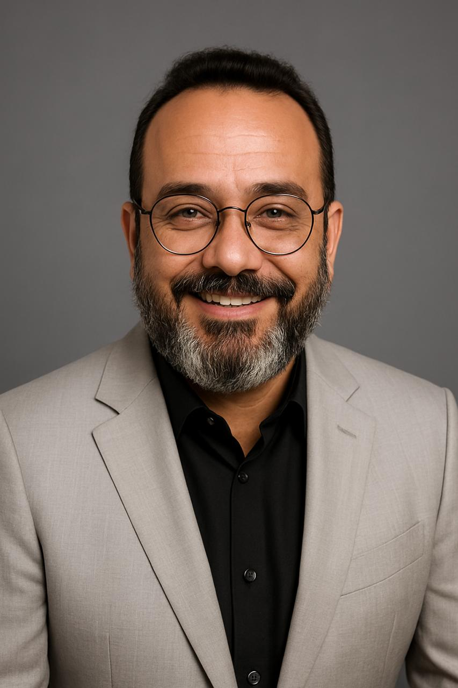

<section id="sobrenos">
    <div class="container split">
        <div>
            <h2>Sobre nós</h2>
            <p>
                A Metacraft nasceu com o propósito de formar e treinar desenvolvedores para o mercado de tecnologia,
                preparando talentos para atender à crescente demanda por profissionais qualificados. Com o tempo,
                evoluímos para um modelo ainda mais estratégico: entregar squads completas e prontas para performar,
                treinadas especificamente nas tecnologias e ambientes de cada cliente, garantindo alta performance e
                continuidade desde o primeiro dia.
            </p>
            <p>
                À frente da empresa está <strong>Lêucio José Batista</strong>, fundador e CEO da Metacraft, profissional
                com mais de 30 anos de experiência em desenvolvimento de software. Sua trajetória inclui passagens por
                gigantes globais como IBM, Meta e Capgemini, sempre liderando projetos complexos e equipes
                multidisciplinares em ambientes de alta exigência.
            </p>
            <p>
                Um dos marcos mais relevantes de sua carreira foi a liderança da equipe de TI da Anvisa durante a
                pandemia, em um período de enorme pressão e necessidade de resposta rápida. A experiência consolidou a
                visão de que tecnologia não é apenas suporte, mas um fator decisivo para acelerar negócios e gerar
                impacto real na sociedade.
            </p>
            <p>
                Enquanto muitas empresas concentram esforços e altos investimentos na busca por profissionais sêniores,
                a Metacraft segue um caminho diferente: acreditamos no poder dos jovens talentos, verdadeiros diamantes
                brutos. Nossa visão é identificar esses profissionais em formação, lapidar seu potencial por meio de
                treinamento intensivo e direcionado à stack do cliente, e conectá-los a líderes experientes que
                asseguram
                qualidade técnica e continuidade.
            </p>
            <p>
                Esse modelo une o melhor dos dois mundos: energia e inovação dos jovens talentos com a segurança e
                maturidade da liderança sênior, resultando em squads de alto desempenho, custo-efetivas e preparadas
                para
                gerar valor desde o primeiro dia.
            </p>
            <p><strong>Metacraft — transformamos talentos em resultados.</strong></p>
        </div>

        <div>
            
        </div>
    </div>
</section>